About this manual
This manual explains how the public portfolio behaves and how its owner operates it day to day. It is written for the site owner first, and for anyone who takes over maintenance later.
The site is a static Next.js export served by Cloudflare Workers, with a small API for the contact form, content editing and AirShare. Public pages are generated at build time; the content dashboard writes to a Cloudflare D1 database, and a publish action asks GitHub to rebuild the site.
Who this manual is for
- Visitors — read sections 02 to 05 and 07 to learn what each page offers.
- The owner — read section 06 for the dashboard workflow and sections 08 to 09 for troubleshooting and data handling.
- A future maintainer — start here, then read the Technical Specification (02) and the File Reference (06).
Status labels used across the documentation
| Label | Meaning |
|---|---|
| Working | Implemented and verified in this engagement, with evidence. |
| Partially working | Works, but with a known constraint or an unverified path. |
| Not implemented | Not built; no claim is made that it exists. |
| Requires configuration | Depends on an account setting, secret or external service. |
| Not tested | Cannot be verified without credentials or a manual action by the owner. |
What is deliberately not covered
Server-side Cloudflare account settings that the local API credentials cannot read are reported as “requires verification” rather than guessed. The admin dashboard's signed-in screens are not shown in this package because they need the owner's password; the sign-in screen is shown instead.
The portfolio at a glance
The site has a single public navigation with eight sections, a contact page, an AirShare guide and a browser app. Every page is server-rendered to static HTML at build time and hydrated with React for theme switching and interactive widgets.
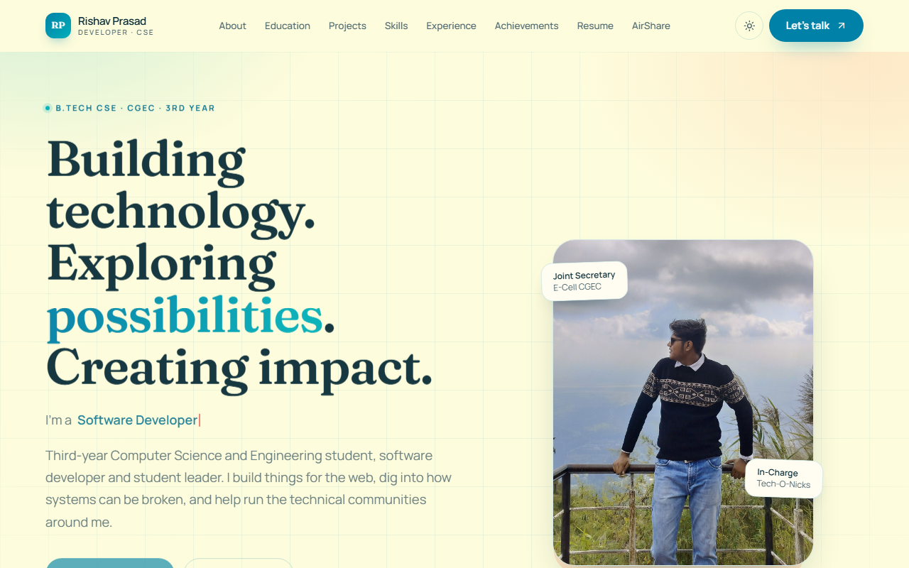
Route map
| Address | Page | Purpose |
|---|---|---|
/ | Home | Introduction, focus areas, leadership highlights and contact call to action. |
/about/ | About | Biography, journey timeline and short personal summary. |
/education/ | Education | B.Tech and school records with scores. |
/projects/ | Projects | Project cards with summaries, stacks and links. |
/skills/ | Skills | Three grouped skill areas. |
/experience/ | Experience | Leadership roles and responsibilities. |
/achievements/ | Achievements | Leadership records, awards and certifications. |
/resume/ | Resume | On-page resume summary with the approved PDF. |
/airshare/ | AirShare guide | Explains the LAN-only transfer tool and its limits. |
/airshare/app/ | AirShare app | PIN-gated browser-to-browser file and message transfer. |
/contact/ | Contact | Message form with Cloudflare Turnstile, plus email. |
/admin/ | Admin | Private content dashboard; excluded from search engines. |
| any unknown path | Not found | Custom 404 page with links back into the site. |
The sitemap lists the eleven public URLs; /admin/ and the 404 page are intentionally excluded.
Mobile layout
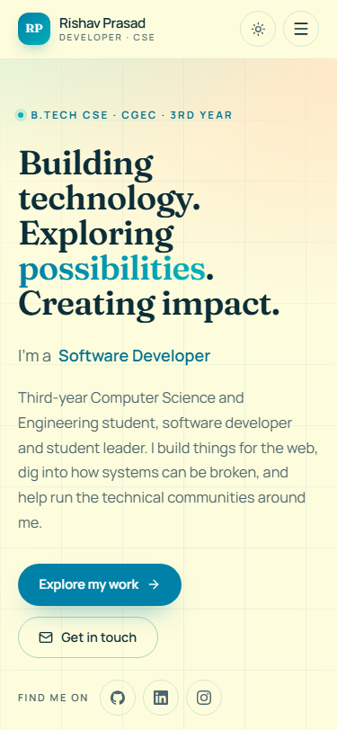
Browsing the public pages
All public pages share the same header, footer and theme control. The header links to About, Education, Projects, Skills, Experience, Achievements, Resume and AirShare, with a “Let's talk” button to the contact page. On narrow screens the links move into a menu panel.
Home
The home page opens with the name, the current programme (B.Tech Computer Science and Engineering at CGEC), an animated role line and a portrait. It then presents four focus areas — software development, web development, cybersecurity and artificial intelligence — followed by three leadership cards: E-Cell CGEC, Tech-O-Nicks and the Smart India Hackathon 2026 organising team. The closing panel invites enquiries by email or through the contact form.
About
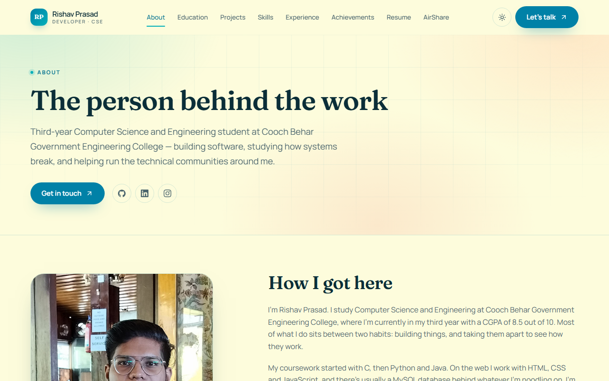
The About page explains the background, how the interest in building software developed, and the principles behind the work. The journey timeline starts with school and ends with the current student roles. The “short version” panel links to education, skills and leadership.
Education
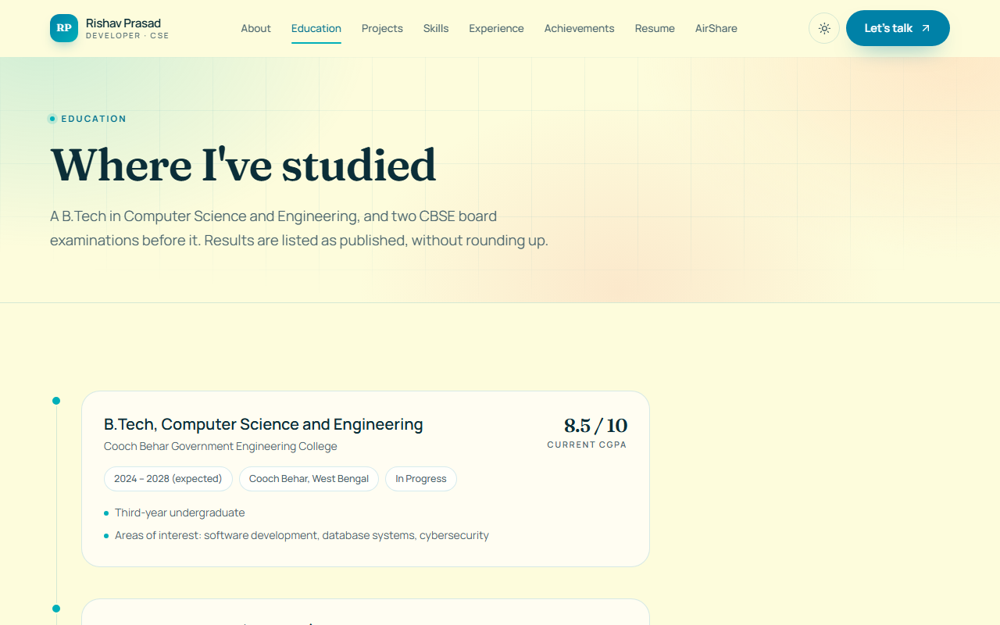
Three records are published: the B.Tech in Computer Science and Engineering at Cooch Behar Government Engineering College, Higher Secondary at Delhi Public School Siliguri, and Secondary at the same school. Each record shows the period, board or university where applicable, and the published score.
Skills
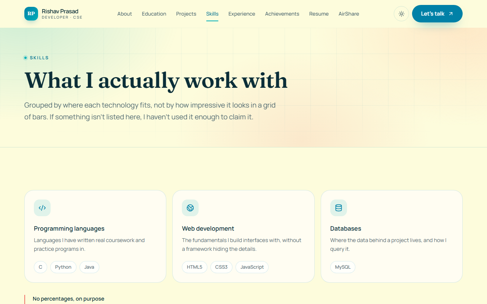
The skills page groups technologies by area rather than by proficiency percentage. It is a plain statement of the tools and topics the owner works with.
Projects
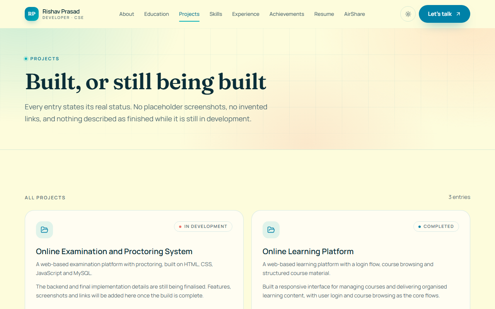
Each card shows a status (In development, Completed or Shipped), a summary, a longer detail paragraph, the stack and any links. Project screenshots are not part of the current content model; the cards are text-only by design.
Experience
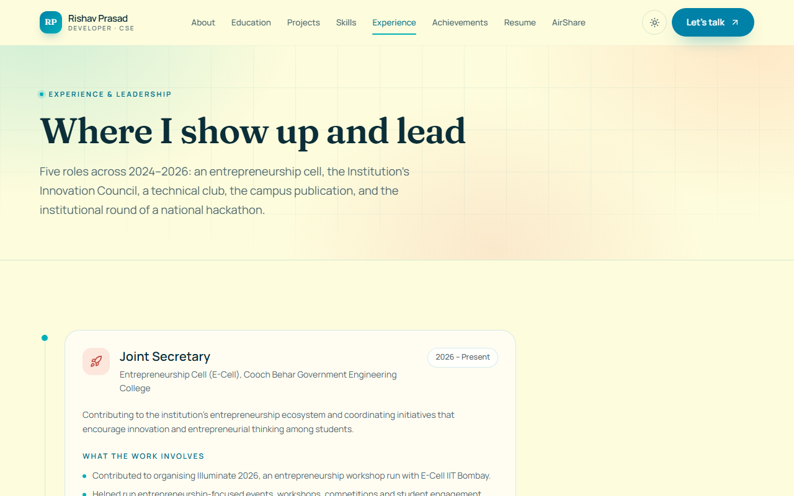
The experience page lists the five published leadership roles: Joint Secretary of the Entrepreneurship Cell, Joint Secretary of the Institution's Innovation Council, In-Charge of Tech-O-Nicks, Overall Coordinator of the institutional Smart India Hackathon 2026 round, and Reporter and Social Media Handler at CGEC Times.
Achievements
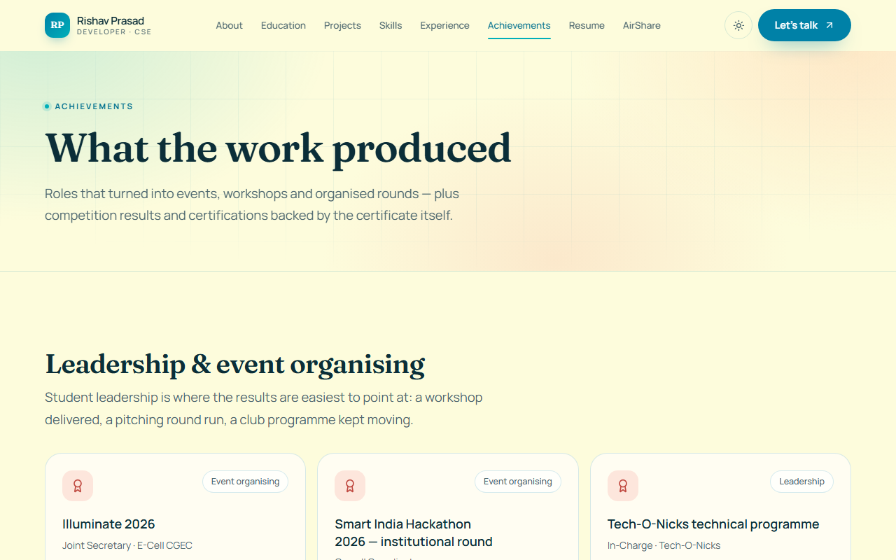
This page separates leadership and event-organising records from awards. Awards include Esperanza 2025 (Robosoccer and Robosumo, winner), ByteBurst Hackathon 2025 (runner-up), Smart India Hackathon 2024 and 2025 (participant) and the Ideathon at Inzio, IIIT Guwahati (participant). The NPTEL certification “Programming, Data Structures and Algorithms using Python” links to a certificate PDF stored in the repository.
Resume
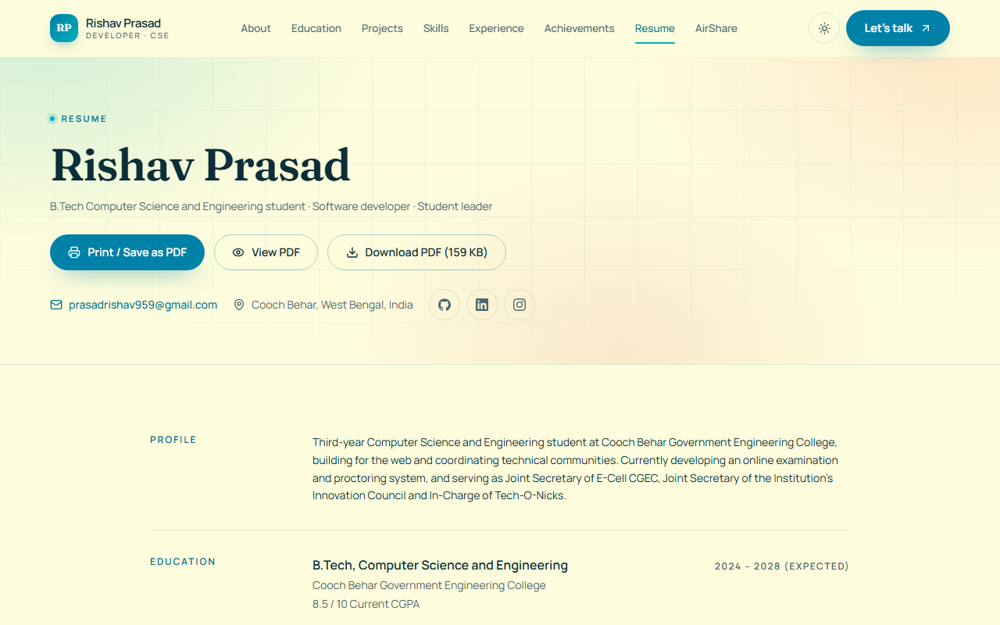
The resume page shows the summary, education, experience, projects and certifications in a print-friendly layout. The “Download PDF” action serves /resume/rishav-prasad-resume.pdf from the static bundle. The page only exposes a PDF when the content flag approvedForPublish is true; it is currently true for the repository file.
Not found
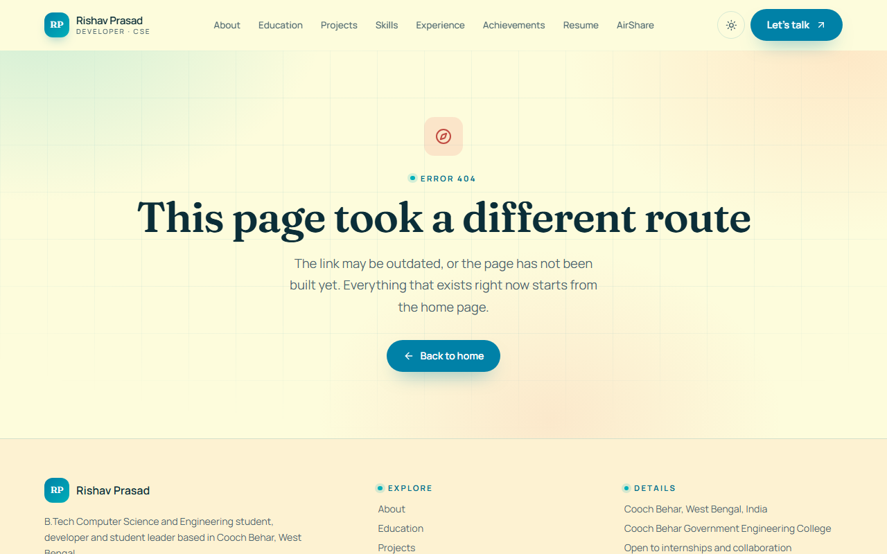
The 404 page keeps the site header and footer and offers routes back to the main sections.
Contacting Rishav
The contact page offers two channels: a form stored in the site's database and a direct email link to prasadrishav959@gmail.com. No phone number is published.
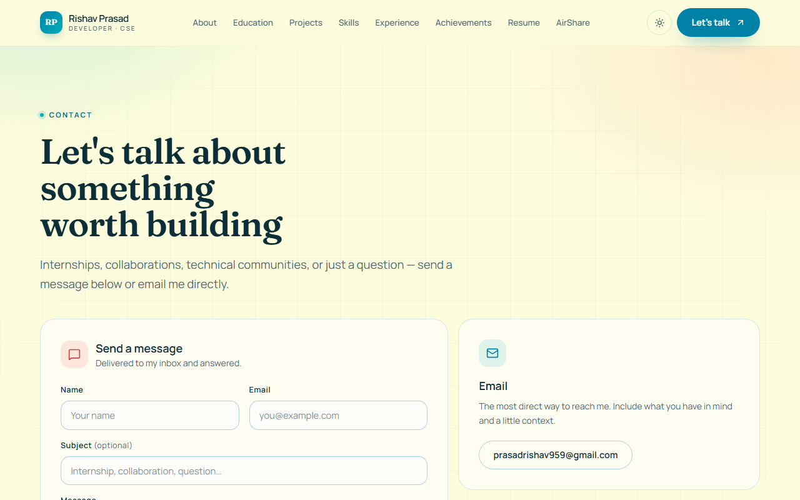
What the form accepts
| Field | Rule | Required |
|---|---|---|
| Name | 2 to 80 characters | Yes |
| Valid address, up to 160 characters | Yes | |
| Subject | Up to 120 characters | No |
| Message | 10 to 4000 characters | Yes |
| Verification | Cloudflare Turnstile token | Yes |
What happens after sending
- The browser sends the fields and the Turnstile token to
POST /api/contact. - The Worker verifies the token with Cloudflare, rejects honeypot submissions silently, and validates every field.
- A per-connection limit of five messages per hour is applied using a hash of the visitor's IP address; no raw IP is stored.
- The message is stored in the D1 table
contact_messagesand appears in the owner's dashboard. - The visitor sees a confirmation. The owner sees the message the next time the Messages tab is opened.
A public submission was successfully stored on 31 October 2026, confirming the live path works. The sender's details are not reproduced in this documentation.
AirShare: local file transfer
AirShare sends files and short messages directly between two browsers on the same Wi-Fi. File bytes travel over WebRTC from browser to browser; the server only stores presence and connection metadata for a short time.
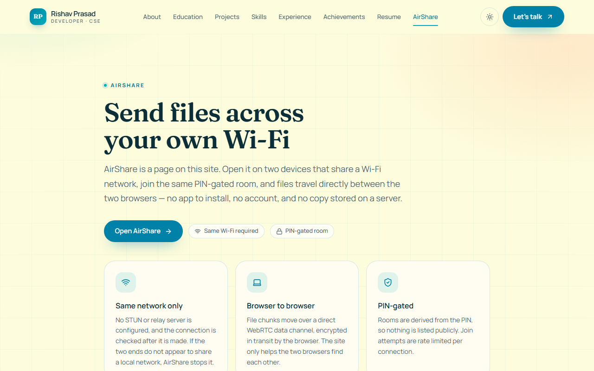
Using AirShare
- Connect both devices to the same Wi-Fi network. Guest networks that isolate clients will not work.
- On the first device, open
rishavprasad.in/airshare/app/, enter a device name and choose Create a room. AirShare generates a random 8-digit PIN. - On the second device, open the same page, enter a device name and the PIN, then choose Join room.
- Wait until both devices show Connected on this Wi-Fi.
- Choose a file (up to 100 MB) or type a message, then send it to the other device.
- Keep both tabs open until the transfer completes. Use Leave room when finished.
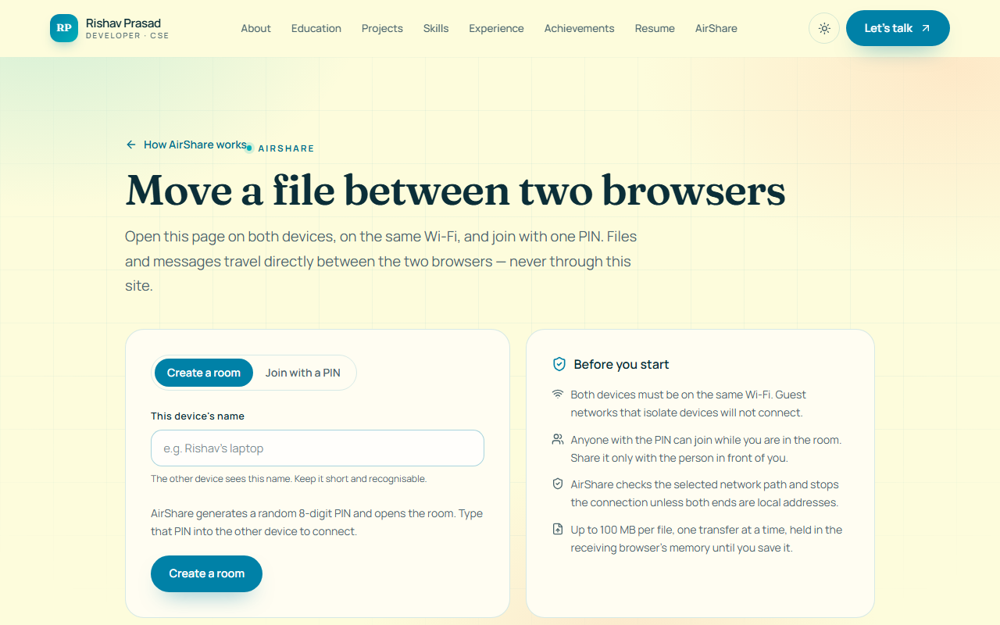
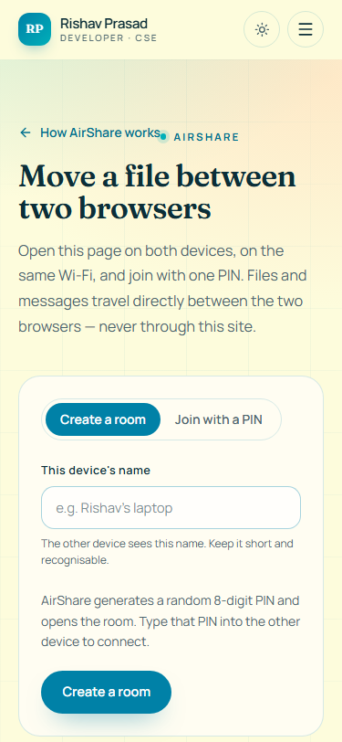
Limits and behaviour
| Item | Limit |
|---|---|
| PIN | 6 to 10 digits; the app creates 8-digit PINs |
| Devices per room | 8 simultaneous peers |
| File size | 100 MB per file, sent in 64 KB chunks |
| Room lifetime | A peer disappears after 90 seconds without a heartbeat |
| Join limit | 30 join attempts per 10 minutes per connection |
| Signalling | 120 signals per minute per device; 64 KB per signal |
AirShare deliberately has no STUN or TURN server and no relay. That is what keeps transfers local, but it also means some networks will refuse a direct connection. When that happens the app stops the connection and explains that a local connection could not be confirmed. This is a design limit, not a missing feature.
The admin dashboard
The dashboard at /admin/ is the owner's private editor for site content and the inbox for contact messages. It is excluded from the sitemap, marked noindex, and disallowed in robots.txt. Access still depends on the password, not on obscurity.
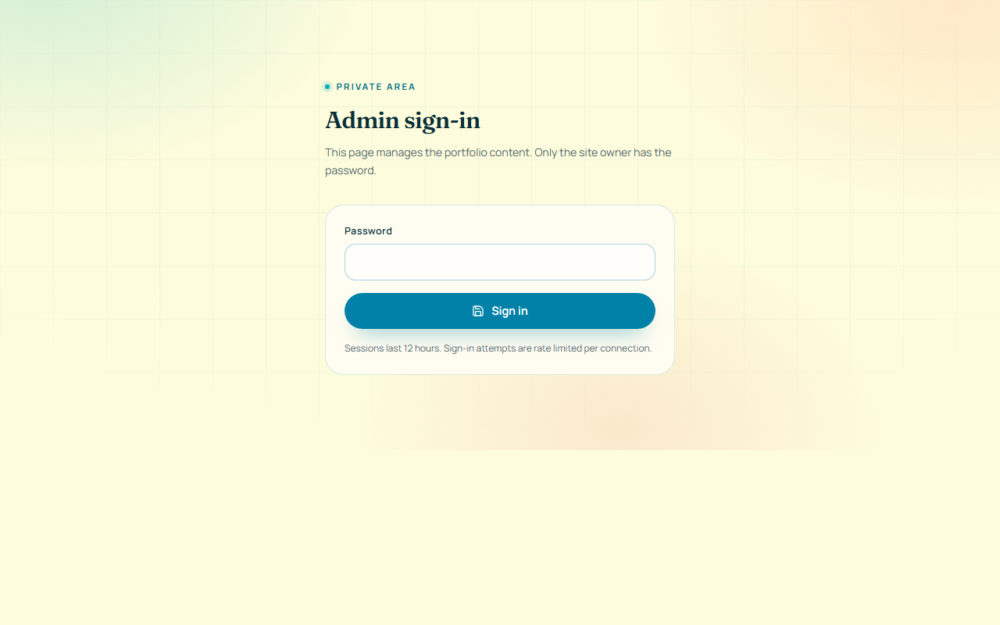
Signing in
- Open
rishavprasad.in/admin/. - Enter the admin password and choose Sign in.
- The Worker checks the password against a PBKDF2-SHA256 hash (100,000 iterations) and sets an HttpOnly, SameSite=Strict session cookie.
- The session lasts 12 hours. Choose Sign out when finished, especially on a shared computer.
Wrong passwords are rate limited: eight failed attempts per 15 minutes per connection. A successful sign-in clears stale attempt records.
ADMIN_PASSWORD_HASH and GITHUB_TOKEN; the hash is generated locally with node scripts/hash-password.mjs and installed with wrangler secret put. Never commit a password or paste it into a command that might fail mid-pipe.What each tab edits
| Tab | Contents |
|---|---|
| Profile | Resume summary, focus domains, social profiles, factual details. |
| Education | Degrees, institutions, boards, scores and notes. |
| Skills | Skill groups with an icon, description and item list. |
| Experience | Leadership roles, periods, summaries and bullet points. |
| Projects | Title, slug, status, summary, detail, stack and links. |
| Achievements | Leadership records, awards and certifications. |
| Resume | Approval flag and the current PDF link; replacement upload is hidden while R2 is disabled. |
| Messages | The last 100 contact messages; mark as read or delete. |
| Media | Image library in R2; currently unavailable because no bucket is bound. |
Editing and publishing
- Edit fields in one or more tabs. Changes stay in the browser until saved.
- Choose Save changes to write the whole document to D1. The API validates every field, allow-list and length limit before writing; a rejected document returns the list of problems and nothing is stored.
- Choose Publish to ask GitHub to rebuild the static site. The Worker sends a
content-publishedrepository dispatch using the stored GitHub token. - Wait for the GitHub Actions run to finish. The public pages change only after that rebuild completes; this is usually a few minutes.
If the dashboard says “Publishing is not configured”, the GitHub token or repository variable is missing. If it says the rebuild request was rejected, the token has expired or lost permission to dispatch workflows.
Messages and media
The Messages tab lists stored contact messages newest first, with an unread flag. Opening a message marks it read; deleting removes the row permanently. The Media tab and the resume upload require an R2 bucket binding that is currently commented out in wrangler.jsonc, so both show a configuration notice instead of an upload control. The resume PDF that the site serves lives in the repository at public/resume/rishav-prasad-resume.pdf.
Session and error states
| Message | Meaning | Action |
|---|---|---|
| Admin login is not configured yet | ADMIN_PASSWORD_HASH or SESSION_SECRET is missing. | Set both as Worker secrets. |
| Invalid credentials | Wrong password. | Retry; after eight failures wait 15 minutes. |
| Too many attempts | Login rate limit reached. | Wait, then sign in. |
| Your session expired | The 12-hour cookie expired or the secret changed. | Sign in again; unsaved edits are lost. |
| Stored content could not be read | D1 returned invalid content; the editor refuses to overwrite it. | Restore from backup before saving (see document 05). |
Appearance and accessibility
The site ships a light and a dark theme built from the same “Summer Dream” palette. The theme follows the operating system on first visit, then remembers the visitor's choice in localStorage under the key theme. A toggle in the header switches modes without a page reload.
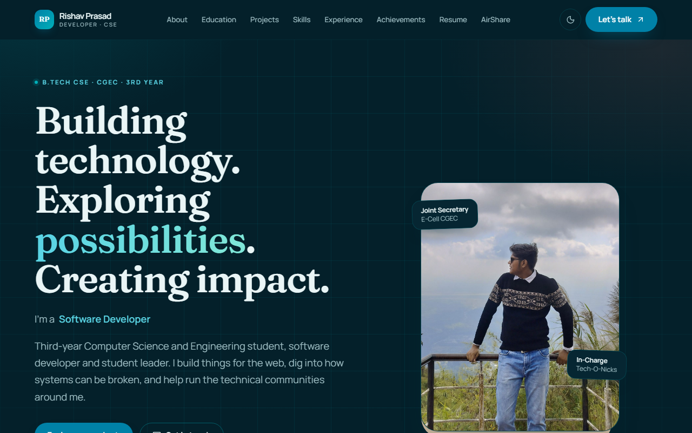
Accessibility measures
- A “Skip to content” link is the first focusable element.
- The navigation toggle exposes its state, and the mobile menu is keyboard operable.
- Every form control has a visible label; the contact form uses native validation hints.
- Images carry alternative text, and decorative elements are hidden from assistive technology.
- Focus outlines are preserved and contrast is designed for both themes.
- The admin editor labels its inputs with real
labelelements, including dynamically generated lists.
Tested widths and browsers
Automated checks cover 320, 375, 425, 768, 1024, 1440 and 1920 px across all eleven public routes. Mobile Safari on a physical phone has not been re-run in this engagement; the layout was verified in Chromium-based automation. AirShare needs WebRTC, which current Chrome, Edge, Firefox and Safari provide.
Troubleshooting
| Symptom | Likely cause | What to do |
|---|---|---|
| Contact form says verification failed | The Turnstile challenge expired or the widget did not load. | Reload the page, complete the challenge again, or use the email link. |
| “Too many messages from this connection” | Five submissions in one hour from the same network. | Wait, or send email directly. |
| AirShare never shows “Connected” | Guest Wi-Fi isolation, different networks, or a network that blocks direct peer connections. | Use the same non-isolated Wi-Fi; retry; if it still fails, use a cable or a local transfer tool. |
| “AirShare stopped this connection because the two devices did not appear to share a local network” | WebRTC selected a public or relay-like path, which AirShare rejects on purpose. | Reconnect both devices to the same router and retry. |
| Admin sign-in says “Something went wrong” | An unexpected server error, often a missing secret or a database problem. | Check /api/health; if the database is unavailable, consult document 05. |
| Saved changes do not appear on the site | Publish was not run, or the rebuild is still queued. | Open the GitHub Actions run, confirm success, then reload with a hard refresh. |
| Resume download returns 404 | The approved file path is wrong or the build has not run since the file changed. | Restore public/resume/rishav-prasad-resume.pdf and redeploy. |
Privacy and data
The public site sets no advertising or tracking cookies. Cloudflare Web Analytics is enabled at the zone level; it is cookieless and aggregates page views. The only first-party storage in the browser is the theme preference. AirShare keeps a device name in localStorage so the field is prefilled.
Contact messages contain the name, email, optional subject and message text supplied by the sender, plus a salted hash of the connection IP for rate limiting. Messages are visible only in the authenticated dashboard. AirShare rooms store a device name, a peer identifier, a hashed room identifier and short-lived WebRTC signalling payloads; file contents never reach the server. Peer and signal rows are pruned automatically.
Glossary
- D1
- Cloudflare's SQLite-based database used for content, messages and AirShare signalling.
- Worker
- The Cloudflare serverless function that serves
/api/*and/media/*and falls back to static assets. - Static export
- The pre-rendered HTML, CSS and JavaScript written to
out/bynext build. - Turnstile
- Cloudflare's CAPTCHA alternative used to protect the contact form.
- PBKDF2
- The password hashing function used for admin sign-in; Workers cap it at 100,000 iterations.
- Repository dispatch
- A GitHub API event that starts the rebuild workflow after a publish action.
- R2
- Cloudflare object storage. It is optional here and currently not enabled.
- WebRTC
- The browser API that carries AirShare files directly between devices.